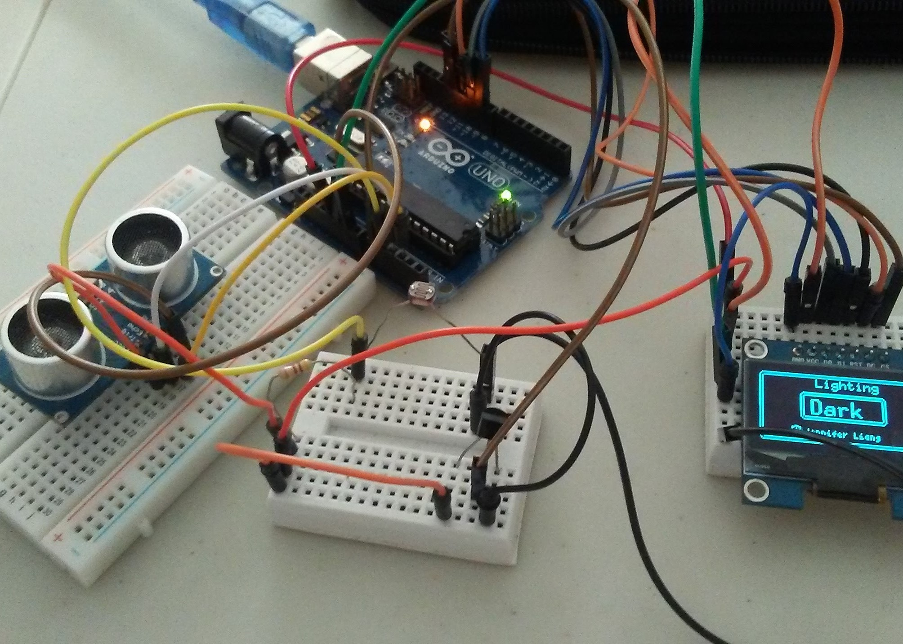
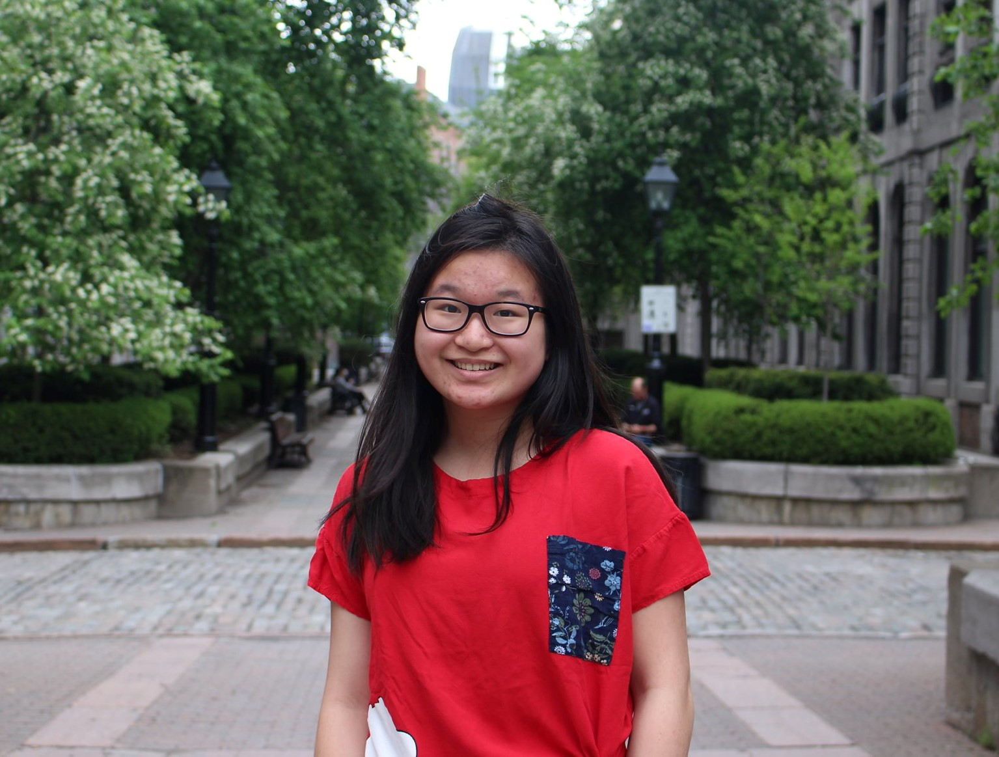

What I've Done
Chinatown CitizenShip

Spotify Analyzer

Harvard QGuide Analyzer
Zoroak

Hi! I'm Jennifer Liang.
I'm currently a freshman at Harvard University studying Applied Mathematics and Computer Science.

Cambridge, MA
August 2019 - May 2023
GPA: 4.0/4.0
Relevant Coursework: Computer Science, Microeconomics, Linear Algebra, Mathematics and Philosophy
Toronto, ON
September 2015 - May 2019
GPA: 96/100
Ontario Scholar, Medal of Academic Excellence
Summa Cum Laude Femina in AP Physics C, Top Honors in Calculus and French
Cambridge, MA
September 2019 - March 2020
Assist with study participant management, lab space set up, greeting, and check-in.
Assist with design and media creation and manage social media accounts on a biweekly basis
Update department websites and wiki with content
Support projects on UX and Digital Accessibility
Toronto, ON
September 2015 - May 2019
Work on front end maintenance of the site, run by WordPress. Utilizes Javascript, CSS, and HTML
School newspaper awarded with “Best Electronic Newspaper” by Toronto Star
www.thereckoner.ca
Cambridge, MA
September 2019 - Present
Volunteer at Harvard’s Girls Who Code to introduce computer science to middle & high school girls in
the local Boston/Cambridge area.
Attend weekly events consisting of workshops on programming languages and CS forums.
Toronto, ON
October 2016 - May 2019
Assist in monthly workshops for Girls Learning Code and Kids Learning Code to instill in students an
interest in computer science and equip them with the skill set.
Lead workshop activities for classes of 20 students in Scratch, Java, Ruby, and HTML, etc.
2018
2018, 2019
2017 - 2019